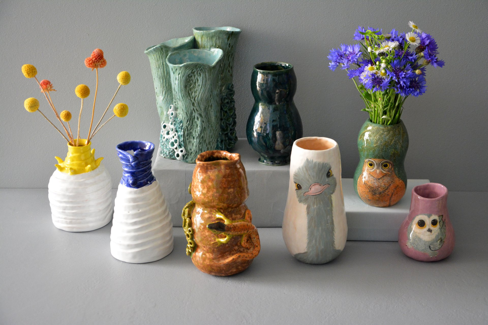

The oldest known word for the root "ceram-" is ke-ra-me-we, which means "ceramic workers" in the Linear B syllabic script of the Mycenaean Civilization. The word "ceramic" can be used as an adjective to describe a material, product or process. It can also be used as a noun in the singular or, more commonly, in the plural form of "ceramics". The earliest ceramics made by humans were ceramic urns (e.g. pots and bowls) made spontaneously or mixed with other materials such as silica, hardened and sintered in fire, or figurines made of clay. Later, the ceramics were glazed and baked in order to be smooth, create colored surfaces and reduce porosity with glassy use. Ceramics now includes a wide variety of ceramic arts, as well as domestic, industrial and construction products. 20.during the century, new ceramic materials were developed for use in advanced ceramic engineering, such as semiconductors.
Kristal Seramikler
Crystalline ceramic materials are not suitable for a wide range of processes. In this case, they have to fall into one of two categories – with the on-site reaction, the ceramic is given the desired shape, or later sintered to form a solid body. Ceramic forming techniques include hand forming, slip casting, tape casting (used to make very thin ceramic capacitors), injection molding, dry pressing and other variations. Ceramic materials are inorganic, non-metallic, usually crystalline oxide, nitride or carbide materials. Some elements, such as carbon or silicon, can be considered ceramics. Ceramic materials are brittle, hard, strong on the basis of compression, and weak on the basis of shear and tension. They withstand chemical erosion, which occurs in other materials exposed to acidic or caustic environments. Ceramics can generally withstand very high temperatures ranging from 1,000 Dec–1,600Dec (1,800Dec–3,000Dec). Amorphous (non-crystalline) character
IREMION
Do you want to buy ceramics?
Communication